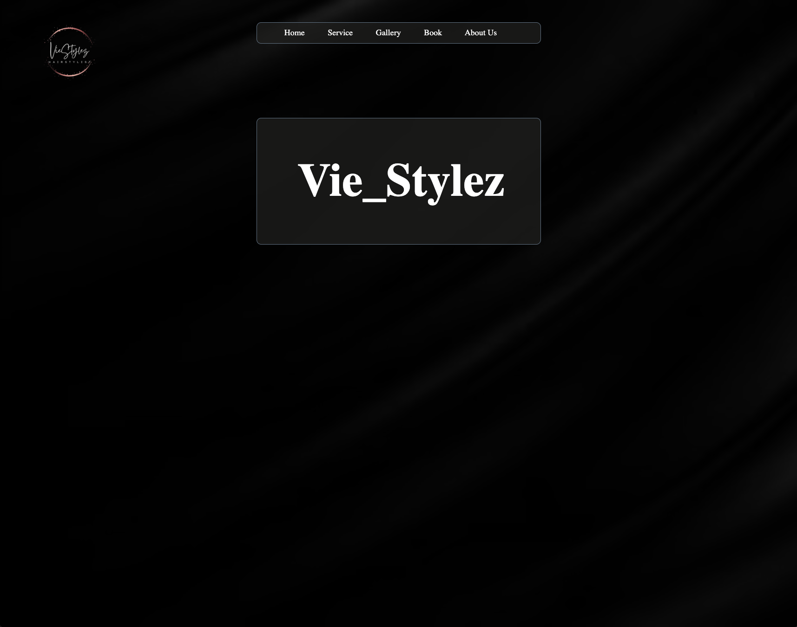

Peer Review - Zainab Bello

https://webpages.charlotte.edu/zbello/Client_Project/home.html - Zainab's Client Home Page
Website Checklist
- Submission leads directly to the reviewed page
- There are no spaces or upper-cases in the file/folder names, including scripts, images, etc.
- Design:
- Page has sufficient contrast/font sizing for easy readability
- Page uses site colors and fonts using the standard .css file
- CRAP - Contrast, Repetition, Alignment, Proximity is satisfied a little bit
- Page has within it:
- Header has site/brand header with text in an h1
- Main starts with the name of the page as an h2 without including the site/brand name
- Page has a brand tagline in a consistent location
- Page does not have a footer
- Site is not completed but so far, meets requirements for this assignment